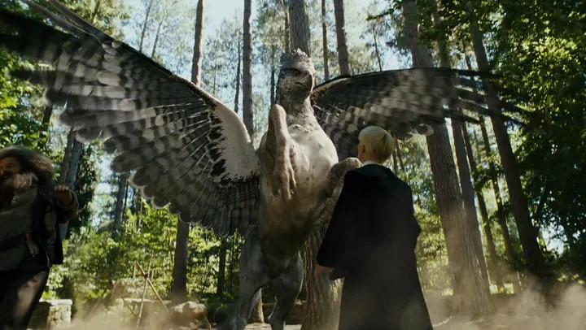
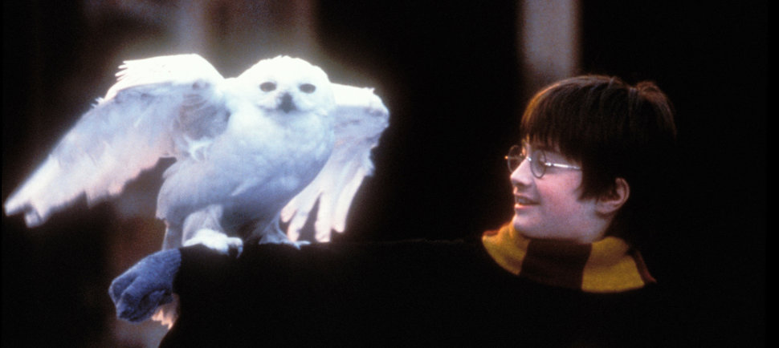

Εδώ θα βρείς εικόνες, βίντεο και πληροφορίες του Χάρι Ποτερ,του αγοριου που νίκησε τον Βολντεμορτ.
>
Φιλοσοφική Λίθος (1997)
Καμάρα με τα Μυστικά (1998)
Αιχμάλωτος του Αζκαμπάν (1999)
Κύπελλο της Φωτιάς (2000)
Τάγμα του Φοίνικα (2003)
Ημίαιμος Πρίγκιψ (2005)
Κλήροι του Θανάτου (2007)
Συγγραφέας Τζ. Κ. Ρόουλινγκ
Χώρα Ηνωμένο Βασίλειο
Γλώσσα Αγγλικά
Genre Φαντασία
Εκδόθηκε 26 Ιουνίου 1997 - 21 Ιουλίου 2007
Αρ. βιβλίων 7
\p style="text-align:center;">Ο Χάρι Πότερ (αγγλικά: Harry Potter) είναι σειρά επτά μυθιστορημάτων φαντασίας από τη Βρετανίδα συγγραφέα Τζ. Κ. Ρόουλινγκ. Η σειρά αυτή περιγράφει έναν κόσμο μάγων με βασικό χαρακτήρα ένα νεαρό αγόρι με το όνομα Χάρι Πότερ. Η κεντρική ιστορία των βιβλίων περιγράφει τον αγώνα του Χάρι Πότερ εναντίον του κακού μάγου Βόλντεμορτ, ο οποίος θέλει να κατακτήσει τον κόσμο των μάγων. Το πρώτο μυθιστόρημα, Ο Χάρι Πότερ και η Φιλοσοφική Λίθος, κυκλοφόρησε στα αγγλικά το 1997 και στα ελληνικά τον Νοέμβριο του 1998. Και τα επτά βιβλία έχουν μεταφερθεί στον κινηματογράφο. Ο τίτλος του έβδομου βιβλίου της σειράς, ο οποίος ανακοινώθηκε στις 21 Δεκεμβρίου 2006 στην προσωπική ιστοσελίδα της Τζ. Κ. Ρόουλινγκ, είναι Ο Χάρι Πότερ και οι Κλήροι του Θανάτου και κυκλοφόρησε στις 21 Ιουλίου 2007 το οποίο σύμφωνα με τους εκδότες έσπασε όλα τα ρεκόρ, αφού η πρώτη έκδοση πούλησε 12 εκατομμύρια αντίτυπα μόνο στην Αμερική. Τα βιβλία της σειράς Χάρι Πότερ είναι εξαιρετικά δημοφιλή με πωλήσεις που μέχρι τον Απρίλιο του 2008 υπερβαίνουν τα 375 εκατομμύρια αντίτυπα παγκοσμίως. Εντούτοις, έχουν δεχτεί οξεία κριτική από κάποιες ομάδες. Τα βιβλία εκδίδονται από την Bloomsbury Publishing Plc στο Ηνωμένο Βασίλειο, από τη Scholastic Press στις Ηνωμένες Πολιτείες, από τη Raincoast Books στον Καναδά και από την Ψυχογιός στην Ελλάδα. Τα πρώτα πέντε βιβλία έχουν μεταφερθεί στον κινηματογράφο από τη Warner Bros.. Το τελευταίο μέρος της τελευταίας ταινίας, έκανε πρεμιέρα στην Ελλάδα στις 13 Ιουλίου του 2011, ενώ η πρεμιέρα στην Αμερική και σε άλλες χώρες έγινε στις 15 Ιουλίου του ίδιου έτους.


Ο Χαρι Ποτερ ειναι ΤΕΛΕΙΟΣ!